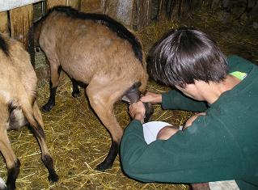

Dans notre ferme nous avons actuellement:
Nous donnons à nos animaux une alimentation à base de céréales et du foin biologique produits sur notre exploitation.
Le troupeau est sorti tous les jours.

La lactation dure environ 9 mois entre février et octobre.
Nous fabriquons des fromages de chèvres et de brebis.
Notre lait est emprésuré après chaque traite. Les caillés sont moulés à la louche. Les fromages sont tournés tous les jours sur les claies.


 Nous
récoltons notre blé
pour la fabrication du pain.
Nous
récoltons notre blé
pour la fabrication du pain.
Nous le préparons avec de la farine bio et du
levain. Il est
cuit dans un four à bois.